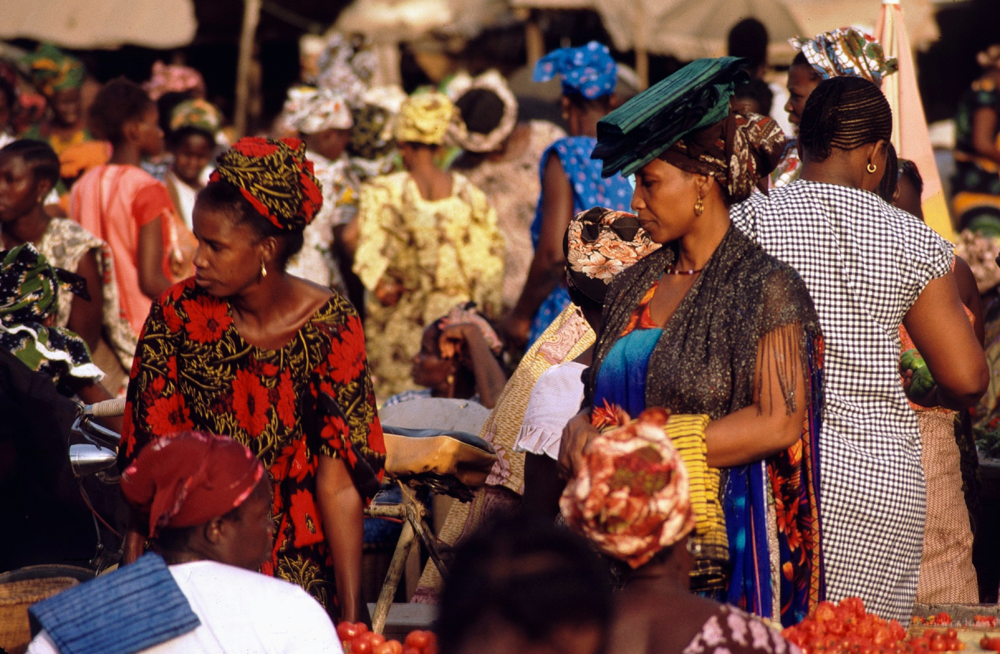
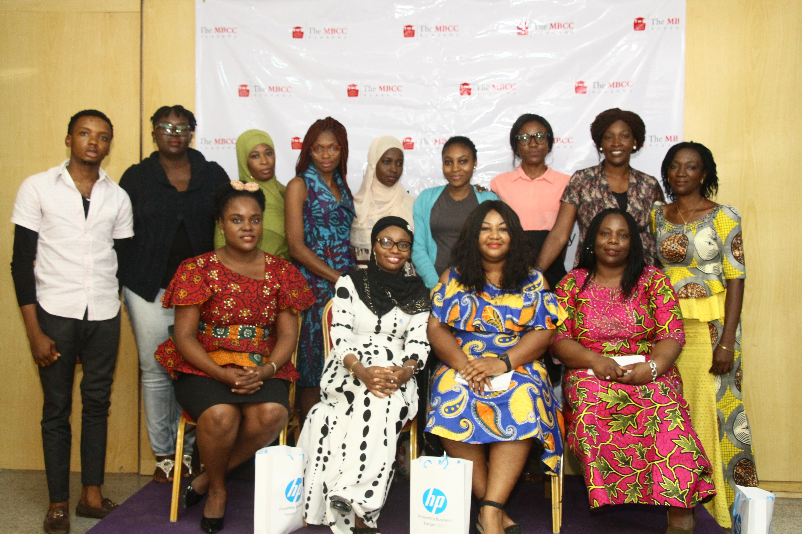
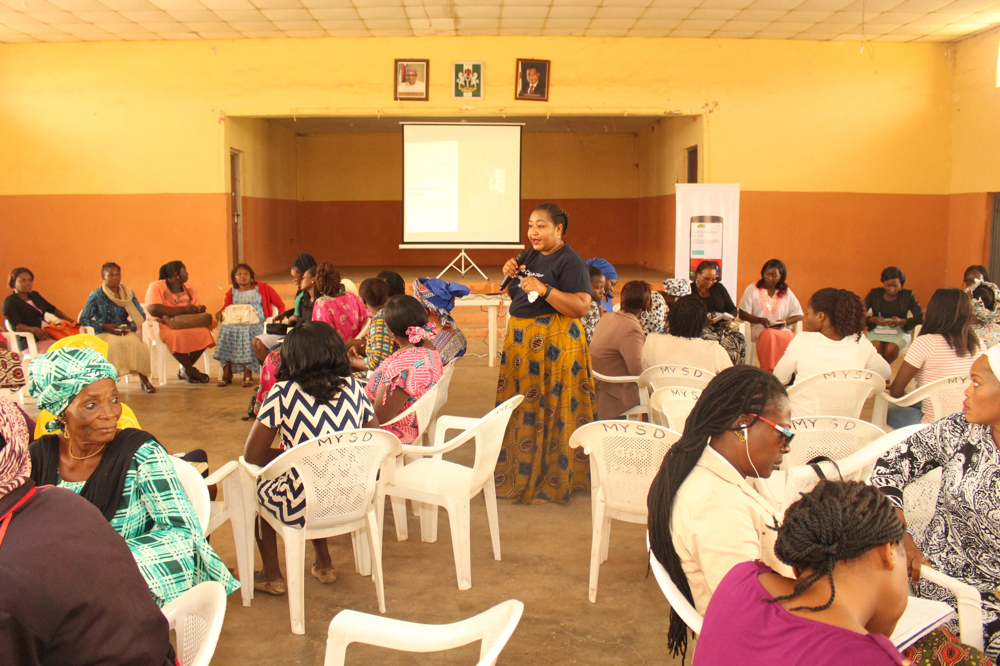
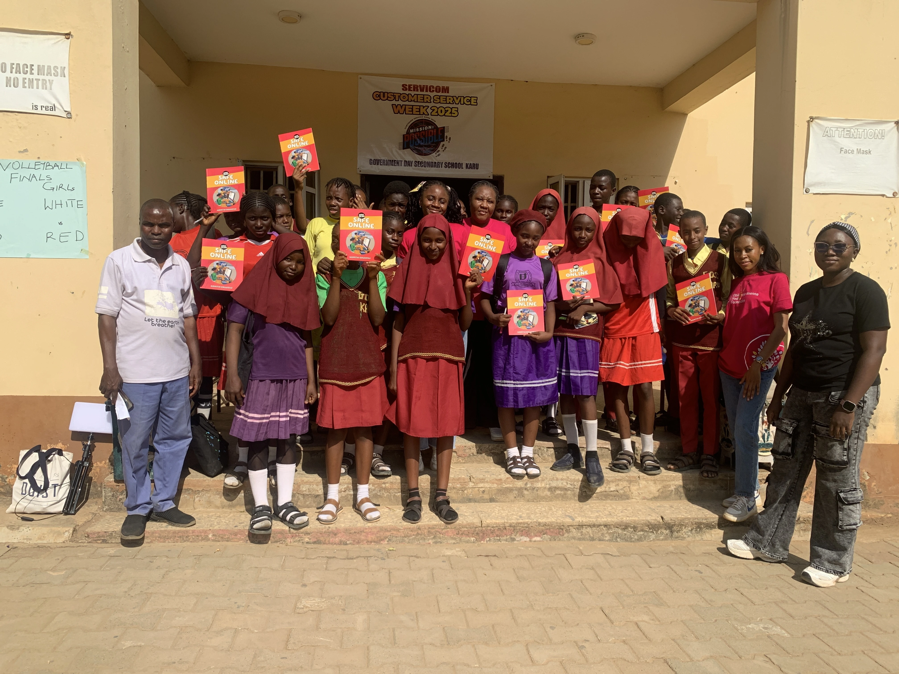
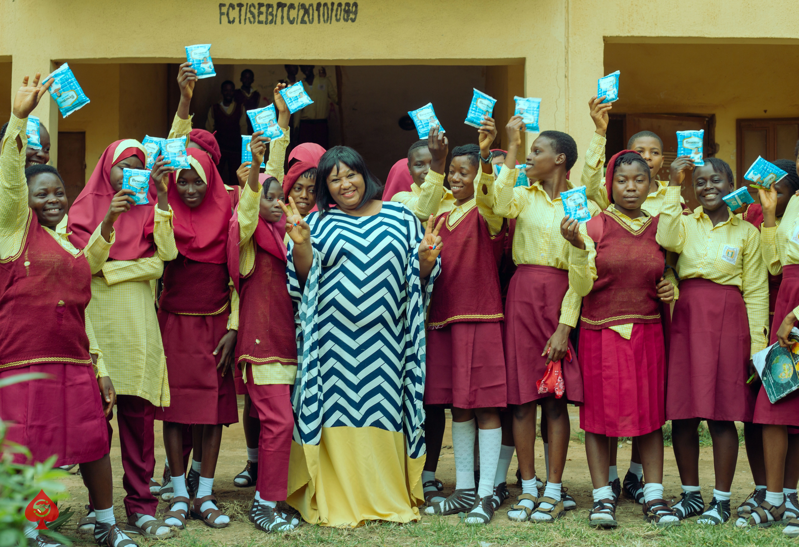
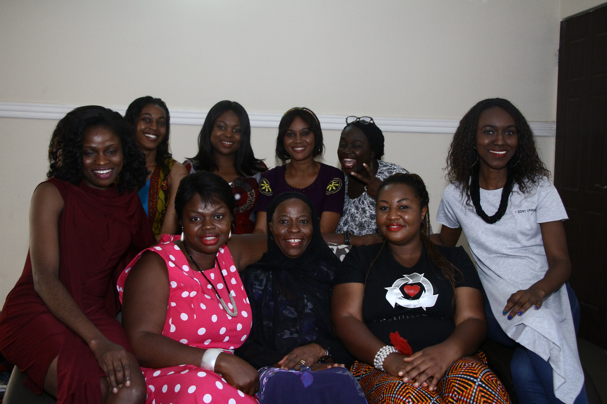
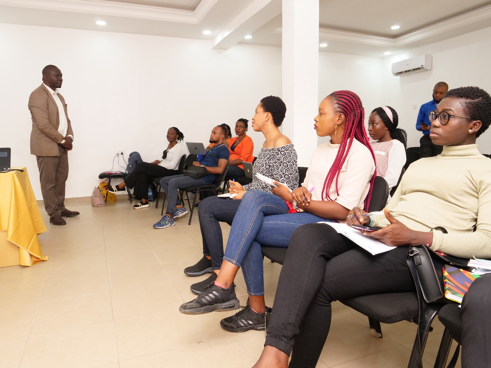
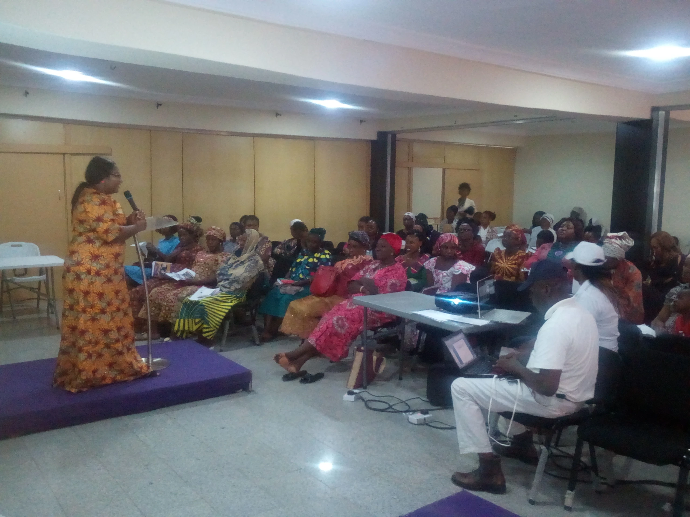
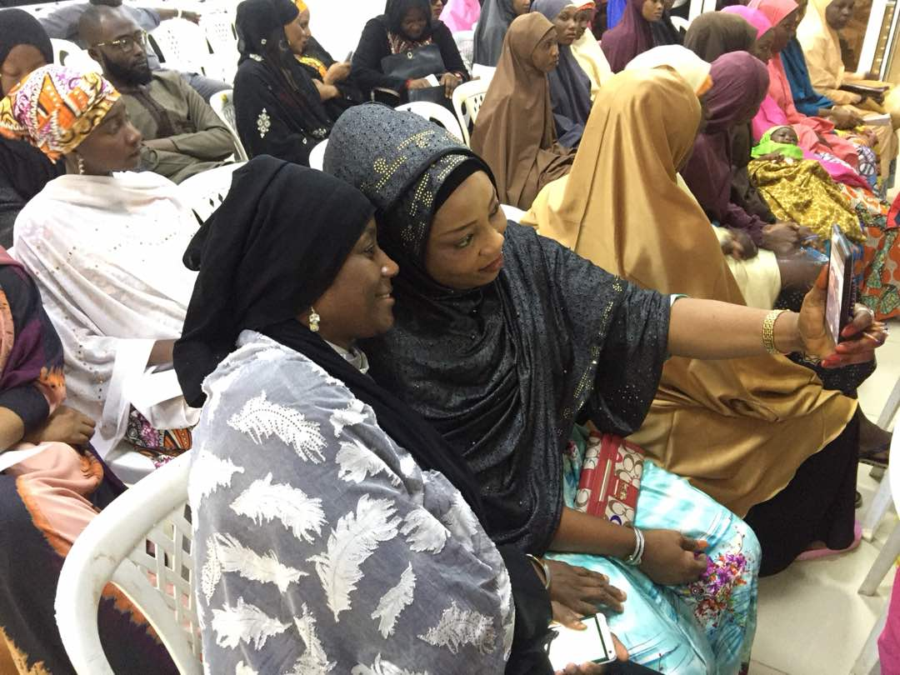

Numbers tell us how far. Stories tell us why it matters.
Every statistic below represents a woman, a girl, a household, never an abstraction.
Gallery
Conferences, community outreach, school programmes, health programmes, leadership sessions, training and women's events.

Conferences
Community Outreach
School Programmes
Health Programmes
Leadership Sessions
Training
Women's Events
Digital LiteracyFull photography library available on request. Please contact our media team.

From awareness to action.
Programme highlights from our menstrual hygiene sensitisation, digital literacy training and school outreach across the FCT.
Read how these programmes reached FCT school girls and women directly, as covered by Leadership Newspaper.
Read the CoverageImpact Reports
Our annual and programme impact reports are compiled as our monitoring and evaluation practice matures. Reach out to info@onmfoundation.org to request the latest available report.